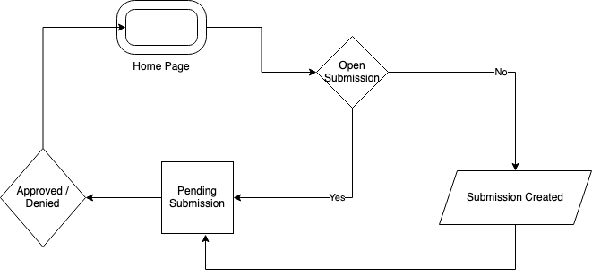
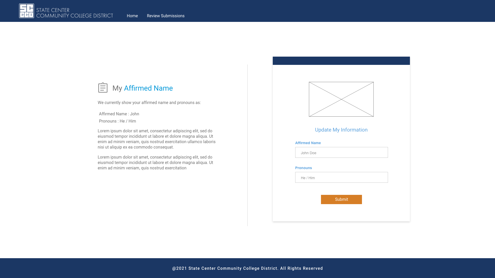
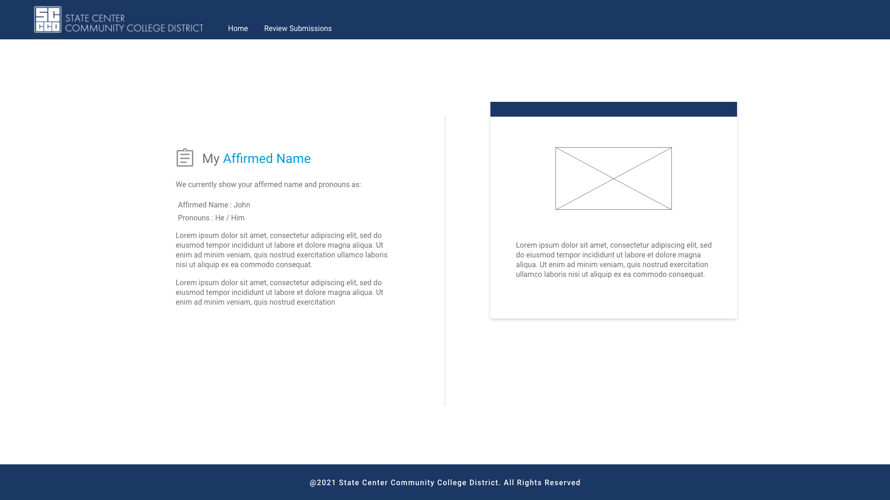
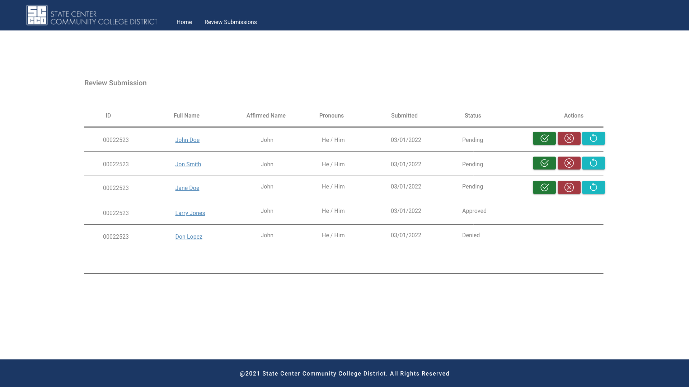
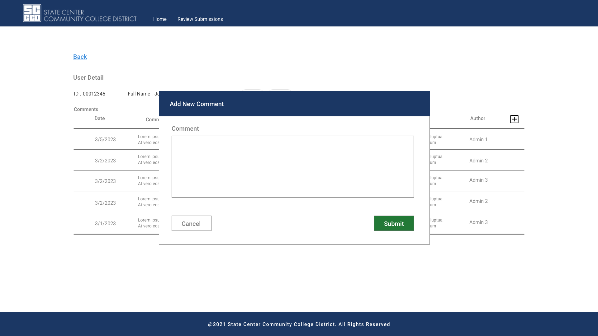
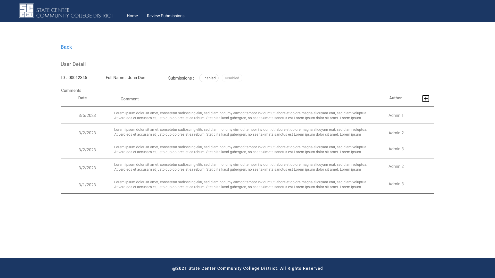
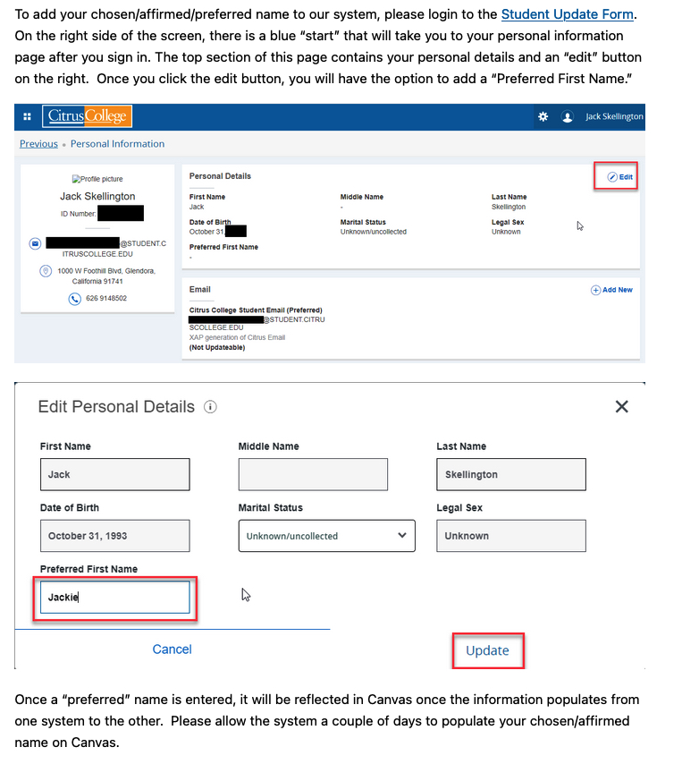
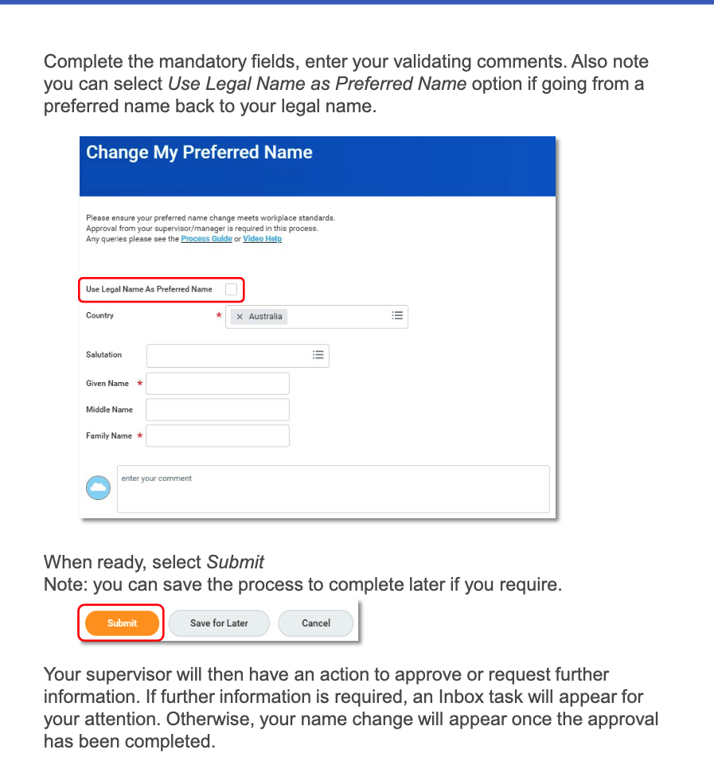
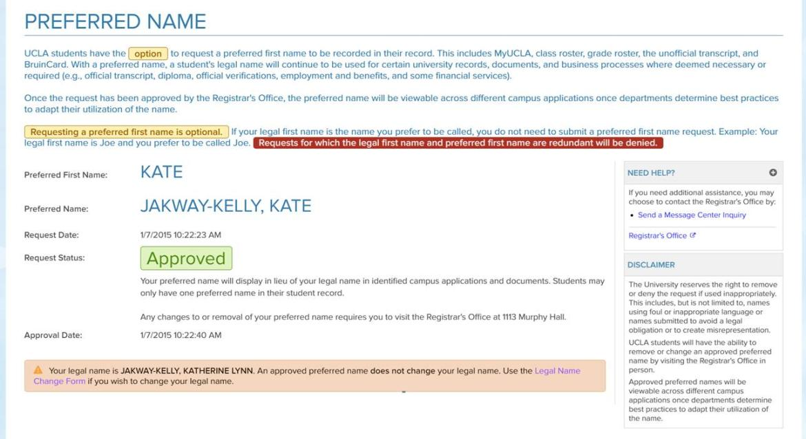
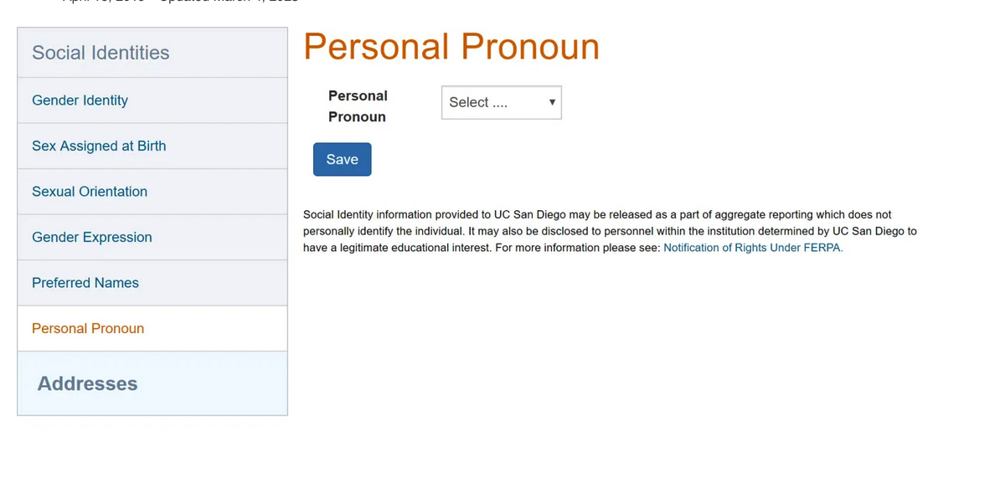

CASE STUDY
Preferred Name

Project Overview
From September 2022 to October 2022, I led the development of the Preferred Name App for our Human Resources department. The goal of the app was to provide staff with a simple and effective way to submit their preferred names and pronouns, ensuring their identities are respected and integrated across various internal systems.
As the Lead UX Designer, UX Researcher, UX Tester, and Developer, I was excited about the opportunity to create a tool that directly empowered staff and promoted inclusivity within our organization.
Project duration September 2022 - October 2022.
| Tech Stack | .NET Core, SQL Server, JavaScript, Bootstrap |
|---|---|
| Project Type | Full-stack web app |
| Role | Lead UX Designer, UX Researcher, UX Tester, Developer |
| Completion Date | Oct 2022 |

Key Features
- Multiple Submissions: Users can make multiple submissions so long as they don't already have a concurrent submission still pending, which made the workflow easy to visualize.
- Clean, Intuitive Interface: A clean and intuitive interface with clear instructions guides staff through the submission process.
- Real-Time Status Feedback: Feedback mechanisms were integrated into the workflow to notify users of the status of their submissions, so nobody is left wondering whether it was processed.
- Administrator Tools: Administrators can remove processed submissions older than one year, view API errors, and disable submissions if needed.

Project Gallery










Design and Development Insights
As the sole UX designer, researcher, tester, and developer on this project, I owned every stage — from competitive research through backend implementation.
User Research
To ensure the success of the Preferred Name App, I conducted an unmoderated usability study that focused on existing preferred name submission systems used by schools like Citrus College, UCLA, and San Diego University. By analyzing user feedback from these systems, I identified several key pain points:
- Difficult Navigation: Users struggled to find the correct page to submit their preferred names
- Unclear Submission Status: Users were often unsure if their submissions had been received and processed
- Lack of Feedback: Many users expressed frustration with the lack of communication after submitting their preferred names, particularly in cases where no response was received
These insights directly influenced the app’s design, ensuring that it addressed these common user frustrations.




Research references, left to right: Citrus College, Finders University, UCLA, San Diego University
Application Workflow
A requirement for this project was to allow users to make multiple submissions so long as they don't already have a concurrent submission still pending. This made the workflow easy to visualize.
Pain Points Identified
- Where is the page: Difficult to navigate to the page
- Did that work: Not sure if the submission was received
- I Guess I'll Follow Up: No response received when submission processed
Design and Development Process
I designed the Preferred Name App workflow to allow multiple submissions, provided the user did not have a pending submission. This streamlined the process for staff while preventing unnecessary duplicate requests.
The design featured a clean and intuitive interface with clear instructions, and feedback mechanisms were integrated into the workflow to notify users of the status of their submissions. This ensured that users were always informed and never left wondering whether their submission had been processed.
On the backend, I built functionality to allow administrators to remove processed submissions older than one year, handle API errors effectively, and disable submissions if necessary. These features contributed to a more efficient and scalable system.
Prototypes
I created multiple mockups to demonstrate the user flow from both the staff and administrator perspectives. These mockups helped to visualize the submission process, ensuring that all interactions were smooth and intuitive for both end users and administrators.
After several iterations and testing, the final version of the app was developed with all identified pain points addressed.
Usability Study Findings
- Administrators: Remove processed submissions older than one year.
- Error Messages: Display API errors to Administrators.
- Disable Submissions: A way to disable submissions if needed.
Key Performance Indicators
- 60% decrease in submission errors: The clear workflow and error handling features resulted in a 60% decrease in submission errors compared to previous manual processes.
- 45% improvement in user satisfaction: Surveys indicated a 45% improvement in user satisfaction, particularly with the enhanced submission feedback and streamlined navigation.
- 50% increase in submission processing efficiency: Administrator tools, such as the ability to clear old submissions and handle API errors, improved the overall efficiency of submission processing by 50%.
Launch
The Preferred Name App was successfully launched and is currently in use, with plans to integrate the preferred name and pronoun data into other HR systems. The app has been well-received by staff, who appreciate the ease of use and the clarity of the submission process.

Lessons Learned & Future Improvements
Full-Stack Ownership
This project helped me further refine my skills as a full-stack developer. Acting as the sole developer, I was responsible for both the front-end and back-end development, as well as ensuring the system was scalable and maintainable. This experience solidified my ability to create end-to-end solutions that meet both user needs and organizational goals.
Impact
The Preferred Name App had a meaningful impact on our organization’s inclusivity efforts. By allowing staff to easily submit their preferred names and pronouns, the app enabled individuals to express their identities more authentically within the workplace. The planned integration of this information into other internal systems further strengthened this initiative, ensuring that staff were recognized by their chosen identities across the organization.
The app also reduced the administrative burden by providing efficient tools for processing and managing submissions, leading to a more organized and streamlined process.
What I Learned
The Preferred Name App reinforced the importance of user feedback and usability testing in driving meaningful design decisions. Additionally, I deepened my expertise in backend development, specifically in building resilient systems that handle errors gracefully and scale to meet future needs.
EXPLORE MORE
Continue through the portfolio.
Browse the complete project collection, or reach out if you would like to discuss the engineering and design decisions behind this work.